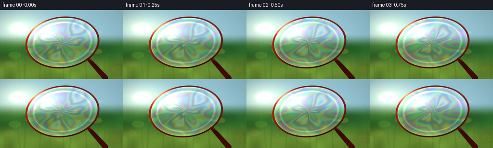
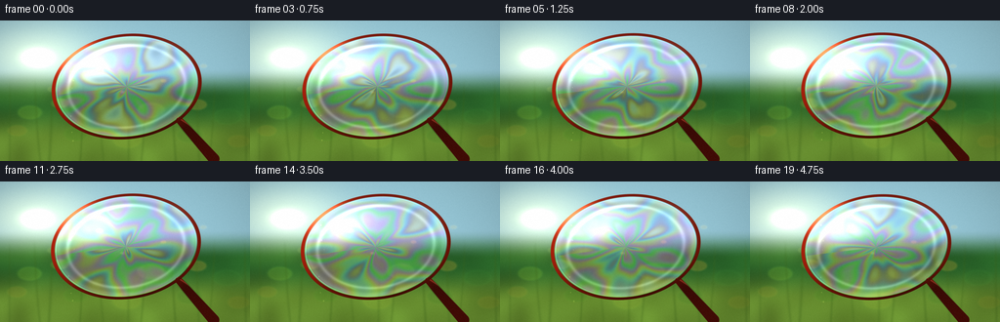
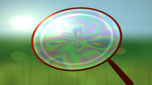
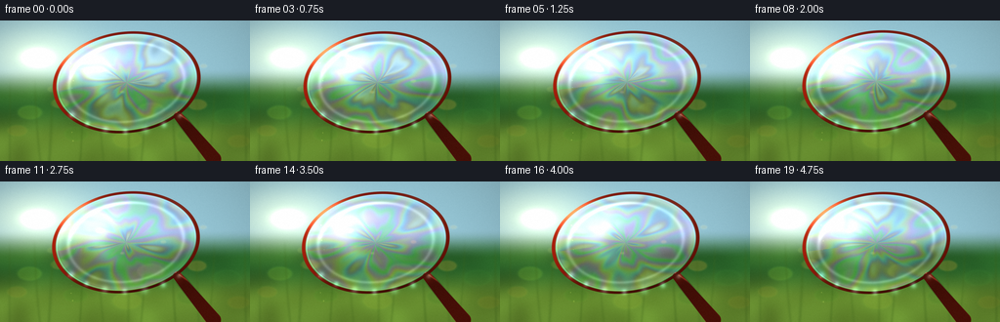
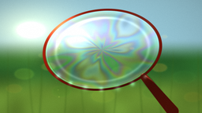
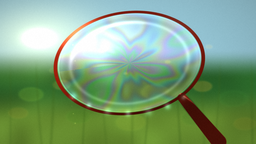

CODING AGENTS AS PIXEL WORLD MODELS
traex/DeepSeek-V4.1-Flash · phygen_083
点击播放 · 原生 RGB 像素
逐轮保存的候选
回放视频、检查图与代码变化。
每份候选均可单独播放。实际图片检查记录在下方工具轨迹中。
候选 01播放与检查图
点击播放 · 原生 RGB 像素

展开代码变化
--- 上一保存版本 +++ 本次保存版本 @@ -0,0 +1,338 @@ +from pathlib import Path + +import numpy as np +from PIL import Image, ImageFilter +from scipy.ndimage import gaussian_filter, map_coordinates + +import artifact_io + + +ROOT = Path(__file__).resolve().parent +WIDTH = 256 +HEIGHT = 144 +FRAMES = 20 +FPS = 4.0 +SS = 4 +RW = WIDTH * SS +RH = HEIGHT * SS + + +def smoothstep(edge0, edge1, value): + t = np.clip((value - edge0) / (edge1 - edge0), 0.0, 1.0) + return t * t * (3.0 - 2.0 * t) + + +def resize_field(field, size): + image = Image.fromarray(np.clip(field * 255.0, 0, 255).astype(np.uint8)) + return np.asarray(image.resize(size, Image.Resampling.BICUBIC), dtype=np.float32) / 255.0 + + +def make_background(): + rng = np.random.default_rng(230583) + yy, xx = np.mgrid[0:RH, 0:RW].astype(np.float32) + x = (xx + 0.5) / RW * 2.0 - 1.0 + y = (yy + 0.5) / RH * 2.0 - 1.0 + + # Broad, heavily defocused bands: a bright sky opening, foliage, and a sunlit meadow. + low = rng.normal(0.0, 1.0, (72, 128)).astype(np.float32) + low = gaussian_filter(low, 5.0) + low = (low - low.min()) / (low.max() - low.min()) + low = resize_field(low, (RW, RH)) + + horizon = smoothstep(0.10, -0.32, y) + sky = np.stack( + [ + np.full_like(x, 0.58), + np.full_like(x, 0.79), + np.full_like(x, 0.86), + ], + axis=-1, + ) + foliage = np.stack( + [ + 0.09 + 0.09 * low, + 0.25 + 0.22 * low, + 0.11 + 0.08 * low, + ], + axis=-1, + ) + meadow = np.stack( + [ + 0.30 + 0.17 * low, + 0.43 + 0.24 * low, + 0.13 + 0.10 * low, + ], + axis=-1, + ) + lower_mix = smoothstep(0.20, 0.70, y)[..., None] + bg = foliage * (1.0 - horizon[..., None]) + sky * horizon[..., None] + bg = bg * (1.0 - lower_mix) + meadow * lower_mix + + # Warm morning light entering from the upper left. + sun_x, sun_y = -0.70, -0.47 + sun_d = np.sqrt((x - sun_x) ** 2 + (y - sun_y) ** 2) + glow = np.exp(-(sun_d / 0.46) ** 2) + core = np.exp(-(sun_d / 0.095) ** 2) + bg += glow[..., None] * np.array([0.34, 0.25, 0.09], dtype=np.float32) + bg += core[..., None] * np.array([0.76, 0.65, 0.42], dtype=np.float32) + + # Out-of-focus leaves and light pools give the background optical depth. + bokeh = np.zeros((RH, RW, 3), dtype=np.float32) + bokeh_alpha = np.zeros((RH, RW), dtype=np.float32) + discs = [ + (-0.76, 0.31, 0.105, 0.24, (0.50, 0.76, 0.20)), + (-0.52, 0.18, 0.075, 0.20, (0.82, 0.79, 0.28)), + (-0.18, 0.34, 0.090, 0.15, (0.19, 0.52, 0.16)), + (0.21, 0.28, 0.120, 0.16, (0.57, 0.72, 0.18)), + (0.58, 0.20, 0.082, 0.22, (0.91, 0.72, 0.22)), + (0.82, 0.37, 0.120, 0.17, (0.18, 0.48, 0.17)), + (-0.86, 0.57, 0.085, 0.13, (0.79, 0.66, 0.20)), + (-0.39, 0.62, 0.105, 0.13, (0.20, 0.55, 0.12)), + (0.02, 0.70, 0.125, 0.12, (0.66, 0.72, 0.18)), + (0.52, 0.64, 0.115, 0.13, (0.14, 0.43, 0.13)), + (0.91, 0.72, 0.095, 0.11, (0.75, 0.62, 0.17)), + (-0.20, -0.30, 0.035, 0.36, (1.00, 0.90, 0.58)), + (0.31, -0.14, 0.024, 0.28, (1.00, 0.87, 0.49)), + (-0.02, 0.02, 0.018, 0.24, (1.00, 0.82, 0.39)), + (0.63, -0.35, 0.030, 0.22, (0.96, 0.91, 0.65)), + (-0.58, -0.02, 0.042, 0.14, (0.83, 0.91, 0.46)), + ] + for cx, cy, radius, strength, color in discs: + distance = np.sqrt((x - cx) ** 2 + (y - cy) ** 2) + soft = 1.0 - smoothstep(radius * 0.76, radius, distance) + rim = np.exp(-((distance - radius * 0.88) / (radius * 0.12)) ** 2) + alpha = soft * strength + bokeh += alpha[..., None] * np.array(color, dtype=np.float32) + bokeh_alpha += alpha + bg += (rim * strength * 0.25)[..., None] * np.array(color, dtype=np.float32) + + bg = bg * (1.0 - np.clip(bokeh_alpha, 0, 0.52)[..., None]) + bokeh + + # Very soft vertical suggestions of nearby grass, safely behind the subject. + for i in range(11): + gx = -0.92 + i * 0.185 + 0.035 * np.sin(i * 2.7) + bend = 0.025 * np.sin(i * 1.9) + stem_x = gx + bend * (y + 0.35) ** 2 + stem = np.exp(-((x - stem_x) / (0.008 + 0.002 * (i % 3))) ** 2) + stem *= smoothstep(-0.22, 0.20, y) + stem *= 0.20 + 0.04 * (i % 4) + bg = bg * (1.0 - stem[..., None]) + stem[..., None] * np.array([0.22, 0.39, 0.10]) + + bg = gaussian_filter(bg, sigma=(2.4, 2.4, 0)) + return bg + + +def capsule_distance(px, py, ax, ay, bx, by): + abx, aby = bx - ax, by - ay + apx, apy = px - ax, py - ay + denom = abx * abx + aby * aby + t = np.clip((apx * abx + apy * aby) / denom, 0.0, 1.0) + qx = px - (ax + t * abx) + qy = py - (ay + t * aby) + return np.sqrt(qx * qx + qy * qy), t + + +def render_frame(index, background): + yy, xx = np.mgrid[0:RH, 0:RW].astype(np.float32) + t = index / FPS + phase = 2.0 * np.pi * t / (FRAMES / FPS) + + drift_x = 3.2 * np.sin(phase + 0.45) + 1.1 * np.sin(2.0 * phase) + drift_y = 2.0 * np.cos(phase - 0.30) + 0.8 * np.sin(1.7 * phase + 0.7) + + cx = RW * 0.505 + drift_x + cy = RH * 0.465 + drift_y + rx = RW * 0.286 + ry = RH * 0.355 + angle = np.deg2rad(-7.0 + 0.45 * np.sin(phase + 0.2)) + ca, sa = np.cos(angle), np.sin(angle) + xr = ca * (xx - cx) + sa * (yy - cy) + yr = -sa * (xx - cx) + ca * (yy - cy) + nx = xr / rx + ny = yr / ry + q = np.sqrt(nx * nx + ny * ny) + theta = np.arctan2(ny, nx) + + # Camera and film drift are applied to the optical background first. + sample_x = xx + drift_x * 0.28 + 2.5 * np.sin(phase * 0.6) + sample_y = yy + drift_y * 0.24 + warped_bg = np.empty_like(background) + for channel in range(3): + warped_bg[..., channel] = map_coordinates( + background[..., channel], + [sample_y, sample_x], + order=1, + mode="reflect", + ) + image = warped_bg.copy() + + # Handle: a softly rounded coral plastic wand extending toward the lower right. + attach_x = cx + rx * 0.74 + attach_y = cy + ry * 0.68 + end_x = RW * 0.855 + drift_x * 0.25 + end_y = RH * 0.985 + handle_distance, handle_t = capsule_distance( + xx, yy, attach_x, attach_y, end_x, end_y + ) + handle_radius = 14.5 + 8.5 * handle_t + handle_mask = 1.0 - smoothstep(handle_radius - 1.2, handle_radius + 1.0, handle_distance) + across = np.clip( + ((xx - attach_x) * (-0.57) + (yy - attach_y) * 0.82) / handle_radius, + -1.0, + 1.0, + ) + handle_light = 0.55 + 0.36 * np.clip(-across, 0.0, 1.0) + handle_color = np.stack( + [ + 0.63 * handle_light, + 0.105 * handle_light, + 0.052 * handle_light, + ], + axis=-1, + ) + handle_color += (np.exp(-((across + 0.43) / 0.13) ** 2) * 0.32)[..., None] * np.array( + [1.0, 0.66, 0.47], dtype=np.float32 + ) + handle_color *= (0.76 + 0.24 * smoothstep(0.0, 1.0, handle_t))[..., None] + image = image * (1.0 - handle_mask[..., None]) + handle_color * handle_mask[..., None] + + # A second, slightly darker connector makes the handle read as being behind the hoop. + connector_mask = 1.0 - smoothstep(17.0, 21.0, handle_distance * (1.0 - 0.15 * handle_t)) + connector_mask *= smoothstep(0.0, 0.20, handle_t) + image = image * (1.0 - 0.25 * connector_mask[..., None]) + + # The soap surface subtly refracts the meadow. + lens = np.clip(q, 0.0, 1.0) ** 5 + film_dx = xx + lens * (13.0 * np.cos(theta) + 4.0 * np.sin(5.0 * theta + 2.0 * phase)) + film_dy = yy + lens * (9.0 * np.sin(theta) - 3.0 * np.cos(6.0 * theta - phase)) + film_bg = np.empty_like(background) + for channel in range(3): + film_bg[..., channel] = map_coordinates( + background[..., channel], + [film_dy, film_dx], + order=1, + mode="reflect", + ) + + # Thin-film thickness is a slow, layered swirl. The small ripples keep the sheet alive. + r = np.clip(q, 0.0, 1.0) + flow = ( + 0.53 * np.sin(2.5 * theta + 4.7 * r + 1.35 * phase) + + 0.30 * np.sin(4.2 * theta - 3.2 * r - 1.75 * phase + 1.1) + + 0.17 * np.sin(7.4 * theta + 2.1 * r + 0.85 * phase + 0.35) + + 0.09 * np.sin(12.0 * theta - 6.5 * r - 0.55 * phase) + ) + thickness = 390.0 + 205.0 * flow + 55.0 * np.sin(3.0 * r + 0.8 * phase) + wavelengths = np.array([650.0, 535.0, 455.0], dtype=np.float32) + phase_rgb = 4.0 * np.pi * 1.72 * thickness[..., None] / wavelengths + interference = 0.52 + 0.48 * np.cos(phase_rgb + np.array([0.15, 1.75, 3.0], dtype=np.float32)) + interference = np.power(np.clip(interference, 0.0, 1.0), 0.78) + interference = 0.44 + 0.76 * interference + interference *= np.array([1.02, 1.0, 1.04], dtype=np.float32) + + # Soft polarised sheen and a curved reflected window. + sheen_angle = np.exp(-((theta - np.deg2rad(-128.0)) / 0.66) ** 2) + sheen_radial = np.exp(-((r - 0.60) / 0.27) ** 2) + sheen = sheen_angle * sheen_radial * 0.40 + glint = np.exp(-((r - 0.82) / 0.030) ** 2) * ( + 0.28 + 0.72 * np.maximum(0.0, np.cos(theta - np.deg2rad(-115.0))) ** 5 + ) + edge_glow = np.exp(-((r - 0.955) / 0.038) ** 2) * 0.16 + + film_color = film_bg * 0.58 + interference * 0.40 + film_color += sheen[..., None] * np.array([1.0, 0.92, 0.77], dtype=np.float32) + film_color += glint[..., None] * np.array([0.92, 0.97, 1.0], dtype=np.float32) + film_color += edge_glow[..., None] * np.array([0.74, 0.92, 0.93], dtype=np.float32) + + # The film is dark and colorless at its upper rim and more transparent toward the center. + dark_rim = np.exp(-((r - 0.88) / 0.085) ** 2) * smoothstep(-0.2, -1.0, ny) * 0.17 + film_color *= (1.0 - dark_rim[..., None]) + + wobbly_q = q + 0.0045 * np.sin(5.0 * theta + 1.7 * phase) + 0.0022 * np.sin( + 11.0 * theta - 0.9 * phase + ) + film_mask = (1.0 - smoothstep(0.986, 1.004, wobbly_q)) * smoothstep( + 0.0, 0.025, 1.0 - np.abs(q) + ) + film_opacity = 0.56 + 0.14 * np.clip(1.0 - r, 0.0, 1.0) + film_alpha = (film_opacity * film_mask)[..., None] + image = image * (1.0 - film_alpha) + image += film_color * film_alpha + + # Glossy hoop: a solid coral rim with a hot top-left reflection and darker underside. + rim_distance = np.abs(q - 1.028) + rim_mask = 1.0 - smoothstep(0.020, 0.030, rim_distance) + rim_light = np.clip( + 0.42 + + 0.39 * np.maximum(0.0, -0.68 * np.cos(theta) - 0.73 * np.sin(theta)) + + 0.13 * np.cos(2.0 * theta + 0.4), + 0.15, + 1.05, + ) + rim_color = np.stack( + [ + 0.79 * rim_light, + 0.135 * rim_light, + 0.055 * rim_light, + ], + axis=-1, + ) + rim_spec = np.exp( + -( + (theta - np.deg2rad(-132.0)) / 0.30 + ) + ** 2 + ) + rim_color += rim_spec[..., None] * np.array([0.94, 0.56, 0.35], dtype=np.float32) + rim_color += (np.maximum(0.0, np.cos(theta + 0.7)) ** 10 * 0.08)[..., None] + image = image * (1.0 - rim_mask[..., None]) + rim_color * rim_mask[..., None] + + # A narrow wet line where the film meets the hoop. + wet_line = np.exp(-((q - 0.987) / 0.010) ** 2) + wet_line *= 0.40 + 0.60 * np.maximum(0.0, -np.cos(theta + 0.4)) ** 3 + image += wet_line[..., None] * np.array([0.22, 0.35, 0.32], dtype=np.float32) + + # Sunlit dust and tiny film droplets drifting just beyond the hoop. + for i in range(9): + seed = i * 1.618 + 0.31 + px = RW * (0.17 + 0.71 * ((seed * 3.71) % 1.0)) + py = RH * (0.08 + 0.80 * ((seed * 7.13) % 1.0)) + px += 5.0 * np.sin(phase + i * 1.3) + py += 3.0 * np.cos(phase * 0.8 + i) + radius = 0.8 + 1.7 * ((seed * 5.07) % 1.0) + mote = np.exp(-(((xx - px) ** 2 + (yy - py) ** 2) / (radius * radius))) + mote *= 0.12 + 0.16 * ((i * 0.37) % 1.0) + image += mote[..., None] * np.array([0.94, 0.77, 0.42], dtype=np.float32) + + # Gentle bloom, warm grading, vignette, and a restrained organic grain. + luminance = image.mean(axis=2) + highlights = np.maximum(luminance - 0.72, 0.0)[..., None] * image + bloom = gaussian_filter(highlights, sigma=(7.0, 7.0, 0)) + image += bloom * 0.28 + + vignette_x = (xx - RW * 0.5) / (RW * 0.62) + vignette_y = (yy - RH * 0.47) / (RH * 0.72) + vignette = 1.0 - 0.18 * np.clip(vignette_x**2 + vignette_y**2, 0.0, 1.4) + image *= vignette[..., None] + image = np.clip(image, 0.0, 1.0) ** np.array([0.93, 0.95, 0.98], dtype=np.float32) + + grain_rng = np.random.default_rng(9100 + index) + grain = grain_rng.normal(0.0, 1.0, (RH, RW, 1)).astype(np.float32) + grain = gaussian_filter(grain, sigma=(0.55, 0.55, 0)) + image += grain * 0.012 + image = np.clip(image, 0.0, 1.0) + + downsampled = Image.fromarray((image * 255.0 + 0.5).astype(np.uint8)).resize( + (WIDTH, HEIGHT), Image.Resampling.LANCZOS + ) + return np.asarray(downsampled, dtype=np.uint8) + + +def main(): + background = make_background() + frames = np.stack([render_frame(index, background) for index in range(FRAMES)]) + artifact_io.save(frames, ROOT) + + +if __name__ == "__main__": + main()
候选 02播放与检查图
点击播放 · 原生 RGB 像素


展开代码变化
--- 上一保存版本
+++ 本次保存版本
@@ -141,9 +141,9 @@
drift_y = 2.0 * np.cos(phase - 0.30) + 0.8 * np.sin(1.7 * phase + 0.7)
cx = RW * 0.505 + drift_x
- cy = RH * 0.465 + drift_y
- rx = RW * 0.286
- ry = RH * 0.355
+ cy = RH * 0.435 + drift_y
+ rx = RW * 0.282
+ ry = RH * 0.342
angle = np.deg2rad(-7.0 + 0.45 * np.sin(phase + 0.2))
ca, sa = np.cos(angle), np.sin(angle)
xr = ca * (xx - cx) + sa * (yy - cy)
@@ -167,14 +167,14 @@
image = warped_bg.copy()
# Handle: a softly rounded coral plastic wand extending toward the lower right.
- attach_x = cx + rx * 0.74
- attach_y = cy + ry * 0.68
+ attach_x = cx + rx * 0.73
+ attach_y = cy + ry * 0.70
end_x = RW * 0.855 + drift_x * 0.25
end_y = RH * 0.985
handle_distance, handle_t = capsule_distance(
xx, yy, attach_x, attach_y, end_x, end_y
)
- handle_radius = 14.5 + 8.5 * handle_t
+ handle_radius = 18.5 + 11.5 * handle_t
handle_mask = 1.0 - smoothstep(handle_radius - 1.2, handle_radius + 1.0, handle_distance)
across = np.clip(
((xx - attach_x) * (-0.57) + (yy - attach_y) * 0.82) / handle_radius,
@@ -184,9 +184,9 @@
handle_light = 0.55 + 0.36 * np.clip(-across, 0.0, 1.0)
handle_color = np.stack(
[
- 0.63 * handle_light,
- 0.105 * handle_light,
- 0.052 * handle_light,
+ 0.70 * handle_light,
+ 0.145 * handle_light,
+ 0.067 * handle_light,
],
axis=-1,
)
@@ -197,7 +197,7 @@
image = image * (1.0 - handle_mask[..., None]) + handle_color * handle_mask[..., None]
# A second, slightly darker connector makes the handle read as being behind the hoop.
- connector_mask = 1.0 - smoothstep(17.0, 21.0, handle_distance * (1.0 - 0.15 * handle_t))
+ connector_mask = 1.0 - smoothstep(21.0, 26.0, handle_distance * (1.0 - 0.15 * handle_t))
connector_mask *= smoothstep(0.0, 0.20, handle_t)
image = image * (1.0 - 0.25 * connector_mask[..., None])
@@ -221,6 +221,7 @@
+ 0.30 * np.sin(4.2 * theta - 3.2 * r - 1.75 * phase + 1.1)
+ 0.17 * np.sin(7.4 * theta + 2.1 * r + 0.85 * phase + 0.35)
+ 0.09 * np.sin(12.0 * theta - 6.5 * r - 0.55 * phase)
+ + 0.045 * np.sin(19.0 * theta + 9.0 * r + 2.2 * phase)
)
thickness = 390.0 + 205.0 * flow + 55.0 * np.sin(3.0 * r + 0.8 * phase)
wavelengths = np.array([650.0, 535.0, 455.0], dtype=np.float32)
@@ -239,8 +240,13 @@
)
edge_glow = np.exp(-((r - 0.955) / 0.038) ** 2) * 0.16
- film_color = film_bg * 0.58 + interference * 0.40
+ # A faint, curved reflected sky makes the thin sheet feel glossy rather than opaque.
+ window_band = np.exp(-((r - 0.43 - 0.075 * np.cos(theta + 1.0)) / 0.16) ** 2)
+ window_band *= 0.22 + 0.78 * np.maximum(0.0, -np.cos(theta + 0.35)) ** 2
+
+ film_color = film_bg * 0.63 + interference * 0.37
film_color += sheen[..., None] * np.array([1.0, 0.92, 0.77], dtype=np.float32)
+ film_color += window_band[..., None] * np.array([0.20, 0.28, 0.30], dtype=np.float32)
film_color += glint[..., None] * np.array([0.92, 0.97, 1.0], dtype=np.float32)
film_color += edge_glow[..., None] * np.array([0.74, 0.92, 0.93], dtype=np.float32)
@@ -254,7 +260,7 @@
film_mask = (1.0 - smoothstep(0.986, 1.004, wobbly_q)) * smoothstep(
0.0, 0.025, 1.0 - np.abs(q)
)
- film_opacity = 0.56 + 0.14 * np.clip(1.0 - r, 0.0, 1.0)
+ film_opacity = 0.50 + 0.13 * np.clip(1.0 - r, 0.0, 1.0)
film_alpha = (film_opacity * film_mask)[..., None]
image = image * (1.0 - film_alpha)
image += film_color * film_alpha
@@ -291,6 +297,16 @@
wet_line = np.exp(-((q - 0.987) / 0.010) ** 2)
wet_line *= 0.40 + 0.60 * np.maximum(0.0, -np.cos(theta + 0.4)) ** 3
image += wet_line[..., None] * np.array([0.22, 0.35, 0.32], dtype=np.float32)
+
+ # Small meniscus droplets collect on the lower rim of a freshly dipped wand.
+ for drop_index in range(7):
+ a = np.deg2rad(43.0 + drop_index * 16.0)
+ dx = cx + rx * 1.027 * np.cos(a)
+ dy = cy + ry * 1.027 * np.sin(a)
+ radius = (4.0 + 2.8 * ((drop_index * 0.43) % 1.0)) * SS * 0.58
+ drop = np.exp(-(((xx - dx) ** 2 + (yy - dy) ** 2) / (radius * radius)))
+ drop *= 0.28 + 0.17 * np.sin(drop_index * 1.7) ** 2
+ image += drop[..., None] * np.array([0.52, 0.86, 0.84], dtype=np.float32)
# Sunlit dust and tiny film droplets drifting just beyond the hoop.
for i in range(9):
候选 03播放与检查图

可观测工具轨迹
实际执行的命令与返回图片。
命令 1exit 0
/bin/bash -c "pwd && rg --files -g 'GENERATION_RULES.md' -g 'prompt.txt' -g 'task_spec.json' -g '"'!*.pyc'"'"
命令 2exit 0
/bin/bash -c "find . -maxdepth 2 -type f -printf '%p\\n' | sort | head -200"
命令 3exit 0
/bin/bash -c 'git status --short --branch'
命令 4exit 0
/bin/bash -c 'cat GENERATION_RULES.md'
命令 5exit 0
/bin/bash -c 'cat prompt.txt'
命令 6exit 0
/bin/bash -c 'cat task_spec.json'
命令 7exit 0
/bin/bash -c "sed -n '1,260p' artifact_io.py && sed -n '1,260p' player_template.html"
命令 8exit 0
/bin/bash -c "python - <<'PY'
import numpy, PIL
print('numpy', numpy.__version__)
print('Pillow', PIL.__version__)
try:
import scipy; print('scipy', scipy.__version__)
except Exception as e: print('scipy unavailable', e)
PY"命令 9exit 1
/bin/bash -c 'python generate.py'
命令 10exit 0
/bin/bash -c 'python generate.py'
命令 11exit 0
/bin/bash -c 'python generate.py'
命令 12exit 0
/bin/bash -c "python - <<'PY'
from pathlib import Path
import json
import numpy as np
from PIL import Image
frames = [np.asarray(Image.open(p).convert('RGB')) for p in sorted(Path('frames').glob('*.png'))]
z = np.load('pixels.npz')['pixels']
print('frames', len(frames), 'shape', frames[0].shape)
print('pixels tensor', z.shape, z.dtype)
print('frame range', int(frames[0].min()), int(frames[0].max()))
print('mean abs frame delta', float(np.mean(np.abs(np.asarray(frames[1:], dtype=np.int16)-np.asarray(frames[:-1], dtype=np.int16)))))
print('unique RGB frame 0', len(np.unique(frames[0].reshape(-1,3), axis=0)))
html = Path('index.html').read_text()
print('index bytes', len(html), 'player data marker', 'const DATA=' in html, 'ready marker', '__pixelReady' in html)
print('artifacts', [(p.name, p.stat().st_size) for p in [Path('pixels.npz'),Path('inspection.png'),Path('transition_check.png'),Path('index.html')]])
PY"命令 13exit 0
/bin/bash -c "python -m py_compile generate.py artifact_io.py && python - <<'PY'
from pathlib import Path
import json, re
from PIL import Image
spec=json.loads(Path('task_spec.json').read_text())
files=sorted(Path('frames').glob('*.png'))
assert len(files)==spec['frames']==20
for p in files:
assert Image.open(p).size==(spec['width'], spec['height'])
assert Path('pixels.npz').is_file() and Path('index.html').is_file()
assert Path('generate.py').read_text().find('artifact_io.save(frames, ROOT)') >= 0
print('validation ok: 20 frames, 256x144, player and compressed pixels present')
PY"命令 14exit 0
/bin/bash -c 'git status --short -- generate.py frames pixels.npz index.html inspection.png transition_check.png'
命令 15exit 0
/bin/bash -c 'ls -lh generate.py frames/00.png frames/19.png pixels.npz index.html inspection.png transition_check.png && git check-ignore -v generate.py frames/00.png pixels.npz index.html inspection.png transition_check.png || true'
命令 16exit 2
/bin/bash -c "sed -n '1,20p' .gitignore"
命令 17exit 0
/bin/bash -c 'ls -la | head -30 && git status --short --untracked-files=all -- .'
视觉工具实际返回图片 1

视觉工具实际返回图片 2

视觉工具实际返回图片 3

视觉工具实际返回图片 4

视觉工具实际返回图片 5

视觉工具实际返回图片 6

保存候选 3 份；完成命令 17 次；可验证图片返回 6 张。原始 API 响应与完整日志保留在本地。